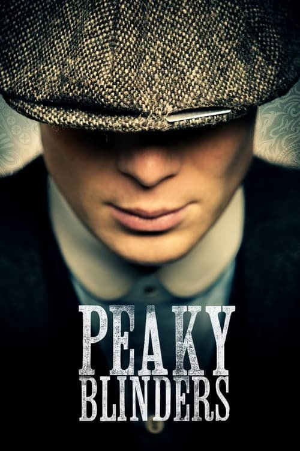

Peaky Blinders (2013)

Plataforma: Netflix
Puntuación IMDb: 8.8/10
Duración: 6 temporadas
Género: Drama Criminal
Sinopsis Rápida
En las calles polvorientas de Birmingham, una familia de gánsteres despiadados, liderada por el enigmático Tommy Shelby, teje una red de poder, violencia y ambición en la era posterior a la Primera Guerra Mundial.
Sinopsis Detallada
{{SINOPSIS_EXTENDIDA}}
¿Por qué tenés que verla?
- Una historia cautivadora que te enganchará desde el primer episodio.
- La icónica banda sonora y la estética visualmente impactante son un elemento clave de la serie.
- Peaky Blinders ha generado un gran impacto cultural, inspirando moda y debates sobre la representación de la clase trabajadora.
- El desarrollo complejo y fascinante de los personajes.
Idea Extra
Análisis del simbolismo y la estética visual en Peaky Blinders